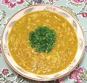

|
Mulligatawny SoupAnglo-Indian | ||||
| Makes: Effort: Sched: DoAhead: |
6 cups *** 1-1/2 hr Most |
"Mulligatawny" is an English distortion for the Tamil words for "Pepper Water". The original British version was fried onions, broth, pepper and spices, but it has been considerably expanded since then (also see Note-7). | |||
|
|
6 4 2 8 1 3/4 5 2 4 1/4 1 1 1/2 1/2 ----- 1/2 ----- |
oz oz oz oz in oz T c c T t t c --- c --- |
Chicken, cooked Celery Carrots Onion Chili (1) Ginger root Apple, tart Oil (2) Stock (3) Lentils, red Curry Powder (3) Salt Pepper, black Coconut Milk -- Serve with Cooked Rice (5) -- Garnish Cilantro leaves |
Vegetarian versions are also made, using vegetable stock and no meat. Prep - (25 min)
|